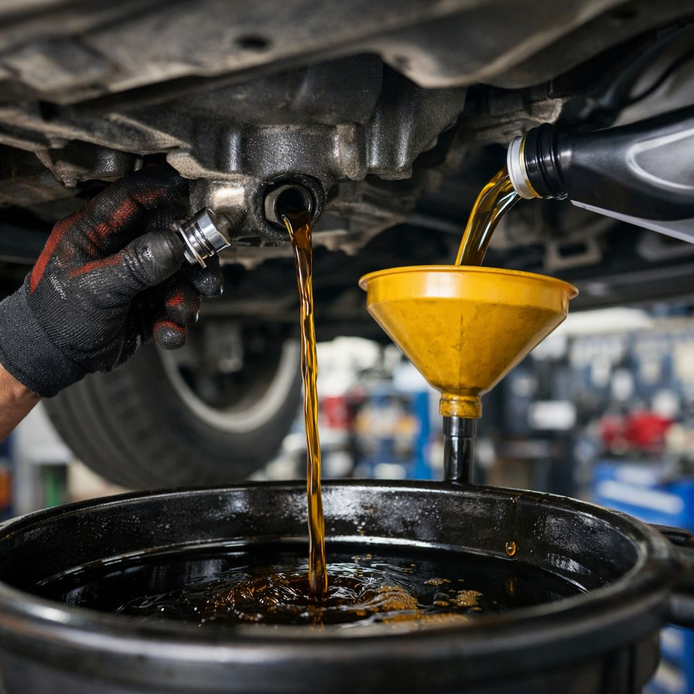
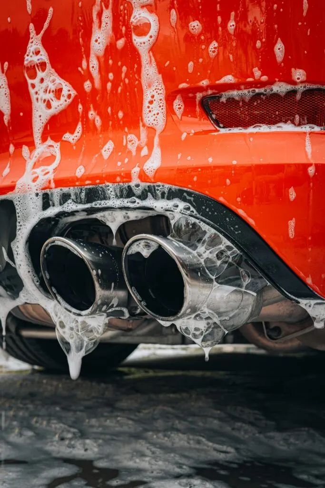
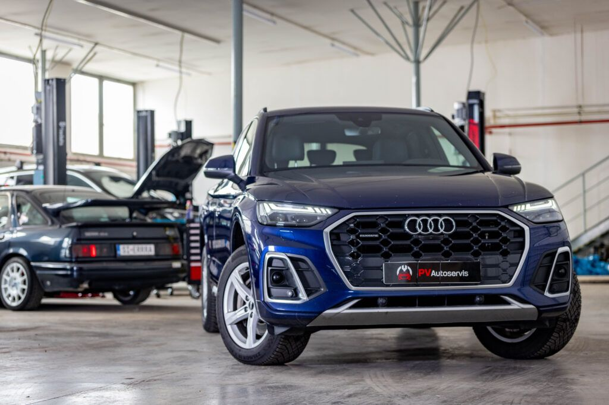
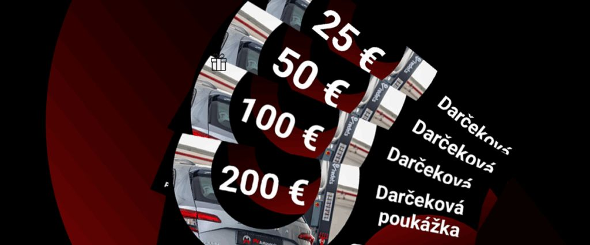
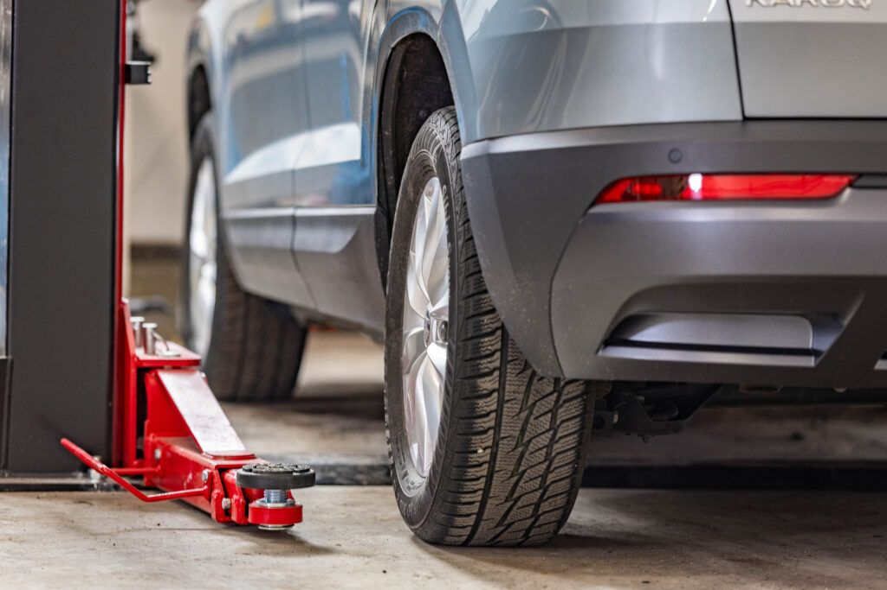
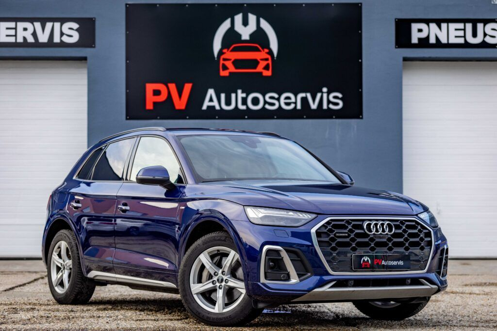
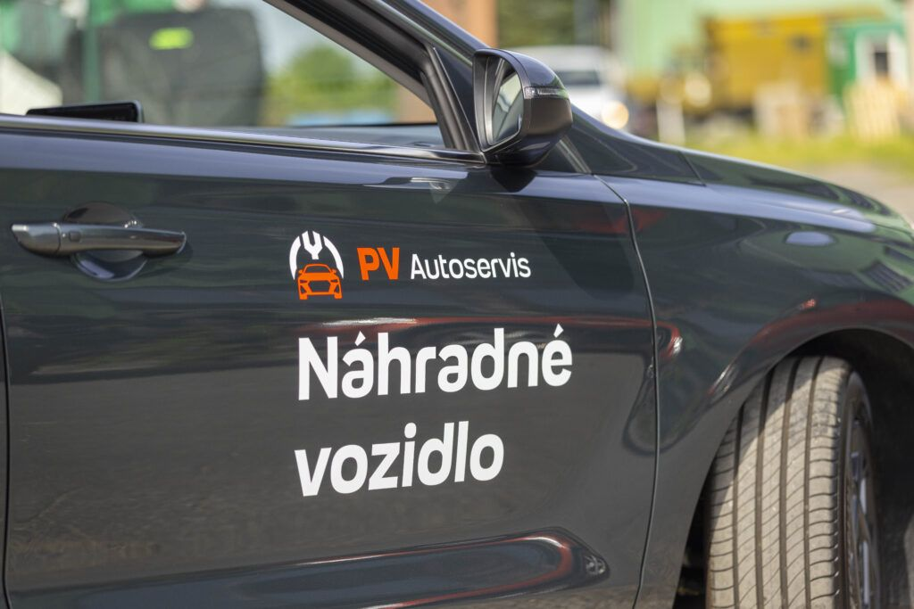
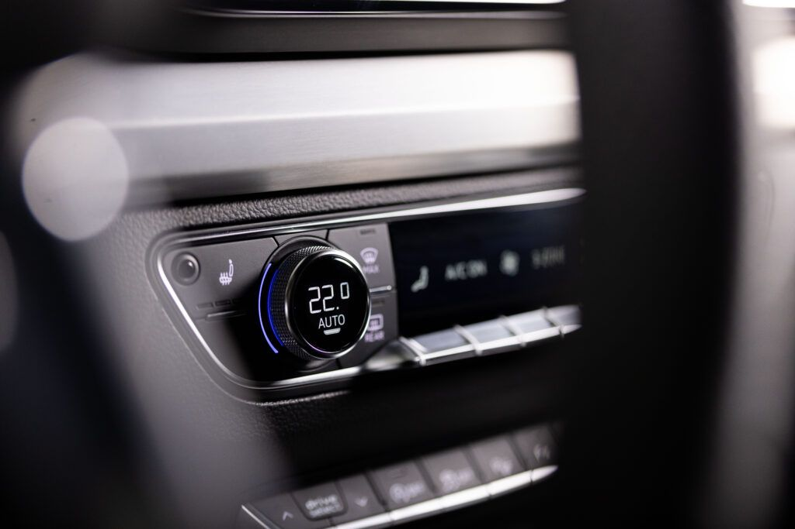

Rady
a akcie.
Tipy na údržbu auta, sezónne ponuky a novinky z dielne.

Akcia do 31. 10.
Kontrola vozidla za 50 €. Pri oprave u nás ju máte zadarmo.
Ak bude auto v poriadku, dostanete voucher 50 € na ďalšie služby.
Čítať článokKontrola vozidla za polovicu: Pripravte svoje auto na jeseň už za 25 €!
Kontrola vozidla za polovicu: Pripravte auto na dovolenkovú sezónu už za 25 €

5 dôvodov, prečo si dať skontrolovať geometriu vozidla

Jarná údržba auta: 5 krokov, ktoré by ste nemali zanedbať

Autoservis na splátky s 0 % úrokom a bez navýšenia
Jarná kontrola vozidla za polovicu: Pripravte auto na novú sezónu už za 25 €
Máte problém s autom? Opýtajte sa cez chat nášho odborníka

Parkujete svoje auto vonku? TOTO si po zime dajte určite skontrolovať

Februárová zľava 12 % na výmenu oleja. Najlacnejšia ochrana motora, ktorá poteší vašu peňaženku

Umývanie a tepovanie vozidla: Starostlivosť, ktorá chráni a predlžuje život auta

Bezpečnosť na prvom mieste: Predvianočná kontrola vozidla za polovicu!

Darčeková poukážka ako ideálny vianočný darček

Päť dôvodov, prečo nečakať s prezutím pneumatík
Špeciálna ponuka: profesionálne čistenie a hĺbkové tepovanie so zľavou

Letná akcia: Kontrola auta za polovicu – len za 15 € do konca augusta!

Prečo je dôležité meniť všetky filtre pri výmene oleja?

Náhradné vozidlo a pick-up servis od PV Autoservis

Len do konca júla: Bezplatná všeobecná kontrola vozidla
Prečo si prezuť zimné pneumatiky za letné?